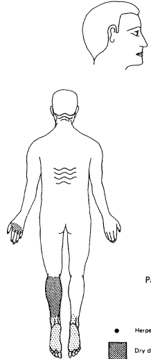
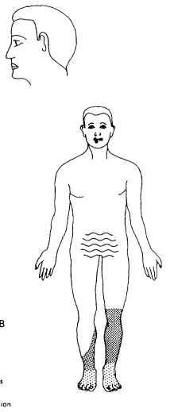

Trabajador B
- Día 173 (jueves 27 de julio): El Paciente B regresó a San Salvador y permaneció en su domicilio hasta que se preparó una habitación especial para él en el Hospital Médico Quirúrgico.
- Estado general: Su condición general continuó mejorando, pero la situación de su otra pierna (derecha) empeoró, con mala circulación, infección y dolor extremo.
- Tratamiento: Se le prescribió un tratamiento con antibióticos de amplio espectro antes de la amputación de su pierna derecha.
- Día 202 (viernes 25 de agosto): Se realizó la amputación de la pierna derecha del Paciente B.
- Recuperación: Después de la amputación, el Paciente B se recuperó y se encontraba en buenas condiciones físicas y mentales.
- Riesgo: Sin embargo, su riesgo de desarrollar cataratas es alto.



Lesiones herpéticas

Descamación seca

Descamación húmeda

Alopecia por radiación